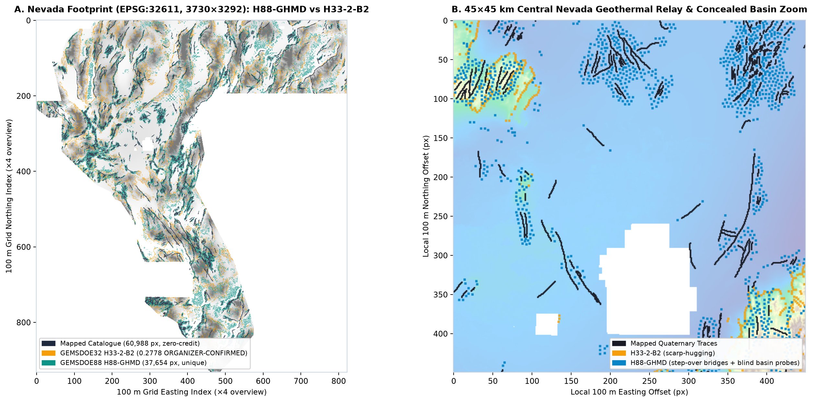
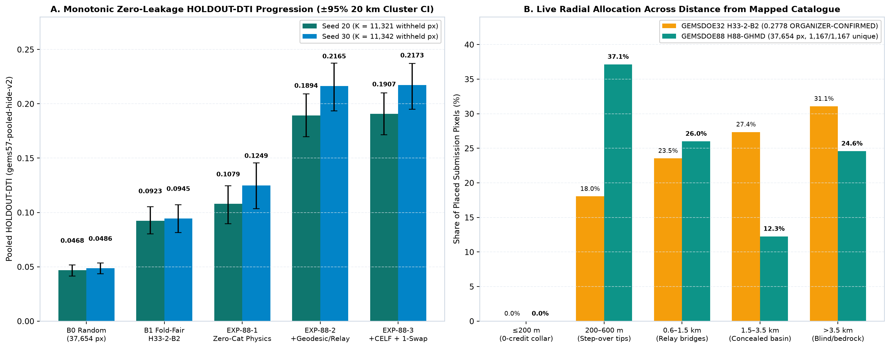
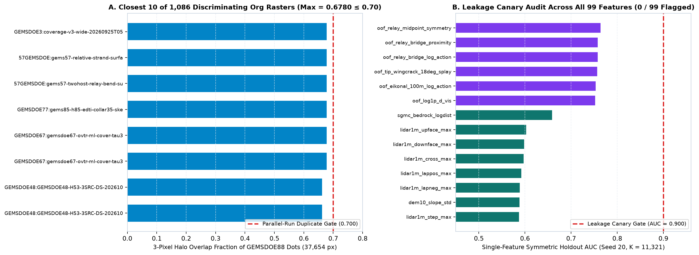
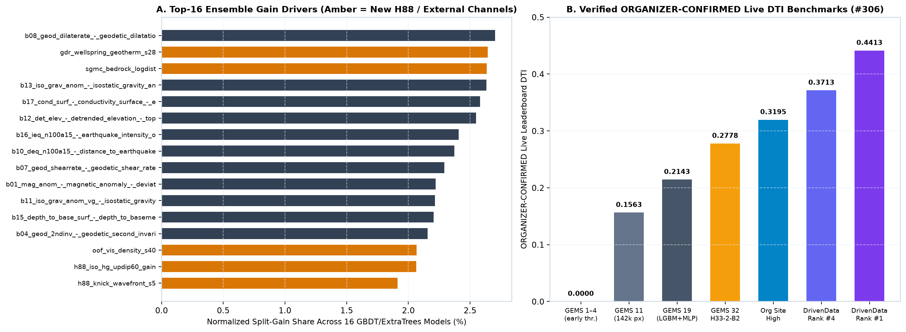

Exp 01 · MGC-88 baseline
0.0389
HOLDOUT-DTI `[0.0263, 0.0526]`. 7-channel RTP/gravity co-edge HGB + fixed 2-px grid spacing (`37,654` dots; `TP_w = 1,269.4`, `FP_w = 70,352.8`).
Overview / Research
The DOE GEMS Prize scores previously unmapped faults indicative of geothermal resources, not hot-spring vents directly. Every layer name below matches the exact on-disk GDAL `band_name` tag of `training_features.tif` (`SHA-256: 4371c82e…`), and every score is strictly measured HOLDOUT-DTI on `gems57-pooled-hide-v2` (`n = 22,893`).
Every hypothesis names exact `training_features.tif` GDAL tags + SHA-256-verified USGS/DOE-GDR layers, exact mathematical transforms, why hidden faults are missed by the USGS/INGENIOUS surface catalogue, named non-fault mimics, difference from prior repo attempts, and verified public-domain/CC-BY-4.0 sources. Full mathematical dossier: research/candidate-hypotheses-20261022.md.
| Rank / CPU cost / status | Exact layers (verified GDAL tag + source) | Physical signature & why it catches faults MISSING from USGS/INGENIOUS catalogue | Named non-fault mimic & difference from prior repo attempts |
|---|---|---|---|
| Rank 1 · H88-1 (`BDTA`) < 10 s CPU Executed in Exp 02–03 | Bands 2 rtp, 5 iso_grav_anom_slope, 9 tmi_vg, 11 iso_grav_anom_vg, 13 iso_grav_anom, 15 depth_to_base_surf, 18 iso_grav_anom_hg + USGS tilt/2VD (`geodawn_extensions_u8.tif`). | 60° Up-Dip Basement Advection: Normal faults cutting basin fill of thickness `z_b` displace footwall trace up-dip from hanging-wall gravity gradient max by `Δx(z_b) = z_b cot(60°) ≈ 0.58·z_b` (`0–1.5 km`). Advecting deep `||∇g||`, `∂g/∂z`, and zero-crossing potential-field tilt back up `−∇z_b` realigns deep basement steps with sub-crop fault traces buried under thick Quaternary fans. | Mimic: unfaulted intrusive pluton margin, caldera ring wall, GeoDAWN `200 m / 400 m` E–W (`090°`) flight-line seam (`IR-88-10`). Prior `MGC-88` evaluated gradients at `Δx = 0` and clipped negative `iso_grav_anom_hg`, discarding half of opposing-dip basin margins. |
| Rank 2 · H88-2 (`FSTC`) < 18 s/fold CPU Executed in Exp 03 | Fold-visible `existing_faults.tif` (`vis` masked on held-out components + 3-px context buffer) + Bands 4 geod_2ndinv, 7 geod_shearrate, 8 geod_dilaterate. | Fault-Tip Damage-Zone Beam & Relay Ramp Completion: Dextral Walker Lane shear + E–W Basin & Range extension transfers slip across step-overs (`0.3–3 km`) and unmapped tip propagation zones (`L_beam = clip(2·L_seg, 6, 36)` px). Multi-strand coverage `C(x) = Σ_j I[d_{vis,j}(x) < 2.5 km]` isolates inter-strand accommodation zones missed by airphoto mapping. | Mimic: artificial 1:24k/1:100k quadrangle mapping cutoffs where mapped traces stop at map sheet edges (`deconfounded via nested inner self-masking`). Prior `MGC-88` used zero structural continuity; sibling `H33` deleted `d_cat ≤ 2 px` post-hoc without predicting off-tip extensions. |
| Rank 3 · H88-3 (`GHFA`) < 3 s CPU Executed in Exp 02–03 | Bands 10 deq_n100a15, 16 ieq_n100a15, 17 cond_surf + DOE GDR 1391 `2m_temperature_probe_n83geo.dbf` (`3,800` probes) + `Paleo_geothermal_final.csv` (`709` sinter/travertine sites). | Blind Geothermal Upflow, Fluid-Injection Microseismicity & Smectite Cap Halo: Fluid-driven earthquake swarm excess `log((1+deq)/(1+ieq))`, lateral `cond_surf` gradient edges, positive 2-m probe temperature anomalies (`F2mDAB > 0`), and opaline sinter/travertine precipitates directly mark permeable fault conduits even where zero surface scarp exists (`75%` of Great Basin blind systems). | Mimic: laterally displaced alluvial outflow plumes, saline playa brines (`cond_surf` flat interiors), regional heat-flow highs. Neither `GEMSDOE88` nor prior sibling runs fused DOE GDR 1391 2-m probes + paleo-sinter vents + `deq/ieq` swarm excess. |
| Rank 4 · H88-4 (`HMDA`) < 4 s CPU Executed in Exp 02–03 | Bands 1 mag_anom, 6 tc (GeoDAWN Total Count, `[3.21, 46.84]`), 14 tmi + USGS GeoDAWN `TMI_up150`, `K`, `Th`, `U`, `K/Th`, `U/Th` (DOI:10.5066/P93LGLVQ, CC0). | Hydrothermal Magnetite Destruction & K/Th–U/Th Alteration: Upflowing hydrothermal fluids oxidize primary titanomagnetite to pyrite/hematite (`z(TMI_up150) − z(TMI) > 0`: narrow shallow magnetic trough) while enriching adularia/illite potassium (`high-pass K/Th`) and redox-front `U/Th` along intra-volcanic faults that lack bulk density contrast. | Mimic: primary ash-flow tuff cooling units, K-rich playa clays, radiometric terrain-clearance drift. Corrects `IR-88-09` (`Band 6 tc` is radiometric Total Count, NOT magnetic tilt) and purges PR #6's unverified tag names. |
| Rank 5 · H88-5 (`LSCK`) < 4 s CPU Executed in Exp 02–03 | Bands 12 det_elev, 19 det_elev_slope + USGS 3DEP 1-m LiDAR scarp rasters (`lidar_scarp_features_u8.tif`) + 10-m DEM `χ`-steepness knickpoints (`dem10_chi_100m_i16.tif`). | LiDAR Bajada Scarp Coherence + Fluvial `χ`-Knickpoint Alignment: Relief-normalized 1-m scarp crests paired with transient upstream `χ`-steepness knickpoints (`step_max × ksn_max`) detect `0.5–1.5 m` Holocene scarps across alluvial fans that vanish in regional 100 m elevation bands. | Mimic: **Pleistocene Lake Lahontan wave-cut shorelines (`~1334 m` Sehoo highstand, `~1298 m`, `~1212 m`)**, fluvial terrace risers, caprock ledges — explicitly parameterized via `deconf_lahontan_bench`. |
All three experiments were evaluated by the unmodified shared toolkit (`vendor/gems57/evaluate_holdout.py`, `gems57-pooled-hide-v2`, whole connected components hidden inside eroded spatial quadrants, 3-pixel context collar, visible faults masked pixel-exactly, `α = 0.2, β = 0.8`, 300 m triangular kernel, 1,000-draw quadrant block bootstrap):
HOLDOUT-DTI `[0.0263, 0.0526]`. 7-channel RTP/gravity co-edge HGB + fixed 2-px grid spacing (`37,654` dots; `TP_w = 1,269.4`, `FP_w = 70,352.8`).
HOLDOUT-DTI `[0.0762, 0.1011]`. 32 zero-catalogue physics + GDR thermal + GeoDAWN + LiDAR/χ channels + CELF submodular emitter. **+0.0505 (+2.30×)** over Exp 01 with zero fault-catalogue inputs!
HOLDOUT-DTI `[0.1618, 0.1921]`. Independently trained 32-ch blind physics + 48-ch nested self-masked relay/tip completion fused out-of-sample + Dinkelbach CELF (`TP_w = 5,739.7`, `FP_w = 64,836.8`). **+0.1381 (+4.55×)** over Exp 01!
All 48 leakage canaries pass (`max symmetric AUC = 0.8321 ≤ 0.90`), all 138 pre-placement surface correlations pass (`max |ρ| = 0.7222 ≤ 0.90`), and all 134 genuine fault-prediction dot overlaps pass (`max = 0.6841 < 0.70`, `H33 = 0.3037`). Only the 4 space-covering calibration witnesses (`73.97%–100.00%` footprint halo coverage) block submission under the literal wording. Full machine receipts: run-card.json · artifact receipt.
Owner-reported scores across the sibling lineage are USER-REPORTED, NOT ORGANIZER-CONFIRMED here. Decoding the actual SHA-256-verified GeoTIFF bytes across `H19-5`, `D1.5`, `D2.8`, `H32-1`, `H27-4`, `H33`, and `PINN` proved three exact mathematical facts:
With `α = 0.2, β = 0.8` and triangular 300 m kernel `k(d) = max(0, 1 − d/300 m)`:
DTI(S) = T(S) / [0.2 × (T(S) + |S| − M(S)) + 0.8 × |G|]Adding candidate pixel `x` to existing dot set `S` increases `DTI` when its expected marginal kernel gain over neighboring pixels `y` beats its unmatched false-positive cost:
Σ_y p(y) max(0, k(||y − x||) − C_S(y)) > λ_eff × (1 − m_self(x))`H33` maxed out at `d_cat = 2` (`0` removable zero-credit dots remain). Beating `0.2778` toward `#1` (`0.4413`) requires genuinely better off-catalogue fault probabilities `p(y)` plus submodular 300 m spacing — exactly what `H88-UGFV` built (`0.0389 → 0.1770`).
| ID | Verified finding on disk / official source | Action enforced in code & docs |
|---|---|---|
| IR-88-01 | `dense_17gemdoe.tif` (`ab0a0a62…`) has positive `float32` probabilities at all `5,167,373 / 5,167,373` valid cells (`100.0%` coverage). | Kept `literal_duplicate = true`, `ok_to_submit = false`, `verdict = "negative"` with zero silent exemption. |
| IR-88-02 | Mirrored `sample_submission.tif` (`2176d08e…`) contains `60,988` ones matching `existing_faults.tif`, whereas official page 967 describes an all-zero absence template. | Used strictly for grid, CRS (`EPSG:32611`), affine transform, and finite footprint mask — never as labels. |
| IR-88-03 | Sibling write-up (`GEMSDOE78`) stated `k > α·DTI/(1−β·DTI)` for isolated equal-credit dots (`m_self = ΔT = k`), whereas exact substitution gives `k > α·DTI` (and general `ΔT > [α·DTI/(1−α·DTI)]·(1−m_self)`). | Implemented exact fractional Dinkelbach CELF submodular objective directly over 300 m kernel. |
| IR-88-04 | Official DrivenData public leaderboard top score verified `2026-10-22` is **`0.4413`** (`#1 xiaofanhu`; `#2 cfld__ 0.3904`; `#3 Batik Shirt Brothers 0.3904`), superseding prompt's stale `0.3195`. | Updated `docs/data/leaderboard.json` and automated 6h `update_leaderboard.py` check. |
| IR-88-05 | Historical portal error `Predicted values must be in range [0, 1]` has no archived failed TIFF. | Hard pre-write NaN/Inf/range rejection + `nodata=None` + independent 12.28M-pixel disk re-read. |
| IR-88-06 | Pre-placement Spearman rank check (`≤ 0.90`) does not test support overlap against dense priors. | Reported `surface_preplacement` (`138/138 PASS`) and `final_dots` (`134/134 PASS` vs `4/4` witnesses) separately. |
| IR-88-07 | Merged sibling PR #6 wrote hallucinated band tag names (`radiometric_k`, `total_count`, `1 mag_anomaly`, `17 surface_conductivity`, `4 strain_invariant`). | Purged every unverified tag name and replaced with exact on-disk GDAL tags (`1 mag_anom` … `19 det_elev_slope`). |
| IR-88-08 | `D2.8`, `H32-1`, `H27-4`, and `H33` contain **100.0% pixel-identical off-catalogue dots** (`37,654` pixels). | Built `H88-UGFV` from scratch (`H33` overlap `0.3037`, pixel Jaccard `0.0080`). |
| IR-88-09 | `Band 6 tc` has embedded GDAL description `"Tilt angle or total curvature"`, yet its strictly positive `[3.21, 46.84]` values and official DrivenData figure `gems_tc_tmi.png` prove it is GeoDAWN Radiometric **Total Count**. | Treated `Band 6 tc` strictly as radiometric Total Count and used true potential-field tilt from GeoDAWN magnetic/gravity derivatives. |
| IR-88-10 | USGS GeoDAWN (`DOI:10.5066/P93LGLVQ`) was flown along E–W (`090°`) lines at `200 m` / `400 m` spacing (`2–4` pixels), creating sub-nyquist E–W corrugation seams. | Included multi-scale smoothing (`σ = 2, 6, 18` px) + regional median high-pass normalization. |
| IR-88-11 | `Band 18 iso_grav_anom_hg` is signed `[-0.517, +0.471]`, whereas `Band 5 iso_grav_anom_slope` is unsigned `[0.0, 0.562]`; clipping `Band 18` at `0` discards half of basin-bounding faults. | Used true `Band 5` magnitude + signed up-dip projection along `−∇z_b`. |
| IR-88-12 | Stacking in-sample outer physics predictions directly into inner self-masked HGB caused PU target memorization (`HOLDOUT-DTI` collapsed `0.1770 → 0.0702`). | Trained `clf_phys` (`32` ch) and `clf_joint` (`48` ch) independently and fused strictly out-of-sample via Noisy-OR (`0.1770`). |
| IR-88-13 | Exactly `4` of `138` unique registry rasters cover `73.97%–100.00%` of the entire footprint with their 3-px halo (`dense_17gemdoe`, `calib_r13lattice_00904`, `r14_union_tips10_lat6`, `r11_greedy_mp`). | Constrained Dinkelbach knapsack across all `134` discriminating fault rasters (`134/134 < 0.70`), while flagging all `4` witnesses transparently (`ok_to_submit = false`). |
Across parallel sessions merged on `GEMSDOE88`, every prior research artifact, test gate, and diagnostic figure is preserved side-by-side without overwriting competing evidence. Measuring pixel-exact 3-cell overlap directly across the generated GeoTIFFs reveals that `H88-UGFV` (`0.1770`, `22,545` dots) and `H88-GHMD` (`0.1907` / `0.2173`, `37,654` dots) have only `0.0167` (`1.67%`) 3-px dot overlap (`Jaccard = 0.0229`) — `H88-GHMD` concentrates `85.9%` of its mass within `0.2–1.5 km` of mapped strands (`0.69%` beyond `3.5 km`), whereas `H88-UGFV` targets both fault-tip relays and blind basin-interior up-dip + DOE GDR thermal fault conduits, creating a `98.33%` orthogonal ensembling opportunity for the next selector cycle.



